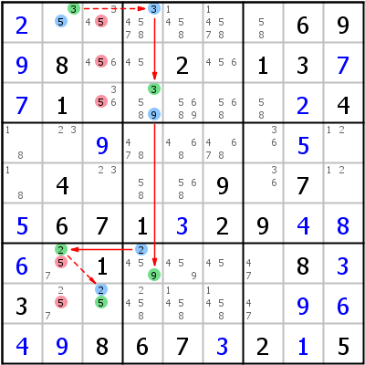

HoDoKu Solving Technique Index: Example for "Alternate Inference Chain Type 1"

Original sudoku:
.......69.8..2.13..1......4..........4...9.7..671.29....1....8.3..........867.2.5
Use the following line if you want to load the sudoku in HoDoKu:
:0708:5:+2......69+98..2.13+7+71.....+24..+9....+5..4...9.7.+5671+329+4+8+6.1....8+33......+9+6+4+9867+32+15::513 523 533 572 582:
The following representation can be pasted in most Sudoku programs:
.--------------.--------------------.-----------. | 2 35 345 | 34578 1458 14578 | 58 6 9 | | 9 8 456 | 45 2 456 | 1 3 7 | | 7 1 356 | 3589 5689 568 | 58 2 4 | :--------------+--------------------+-----------: | 18 23 9 | 478 468 4678 | 36 5 12 | | 18 4 23 | 58 568 9 | 36 7 12 | | 5 6 7 | 1 3 2 | 9 4 8 | :--------------+--------------------+-----------: | 6 257 1 | 2459 459 45 | 47 8 3 | | 3 257 25 | 2458 1458 1458 | 47 9 6 | | 4 9 8 | 6 7 3 | 2 1 5 | '--------------'--------------------'-----------'
Representation of the step:
.------------------.---------------------.-----------. | 2 *35 34-5 | *34578 1458 14578 | 58 6 9 | | 9 8 4-56 | 45 2 456 | 1 3 7 | | 7 1 3-56 | *3589 5689 568 | 58 2 4 | :------------------+---------------------+-----------: | 18 23 9 | 478 468 4678 | 36 5 12 | | 18 4 23 | 58 568 9 | 36 7 12 | | 5 6 7 | 1 3 2 | 9 4 8 | :------------------+---------------------+-----------: | 6 *2-57 1 | *2459 459 45 | 47 8 3 | | 3 2-57 *25 | 2458 1458 1458 | 47 9 6 | | 4 9 8 | 6 7 3 | 2 1 5 | '------------------'---------------------'-----------' AIC 5- r1c2 -3- r1c4 =3= r3c4 =9= r7c4 =2= r7c2 -2- r8c3 -5 => r123c3,r78c2<>5
Copyright © 2008-12 by Bernhard Hobiger
Last modified on May 5, 2025 by shorty#3746
(based of the 1to9only Github repo)
All material on this page is licensed under the GNU FDLv1.3.